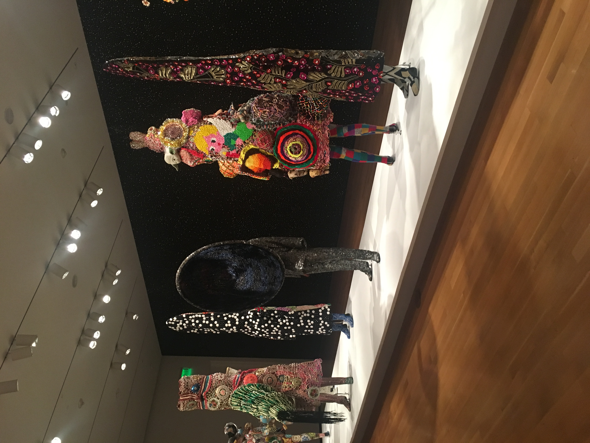
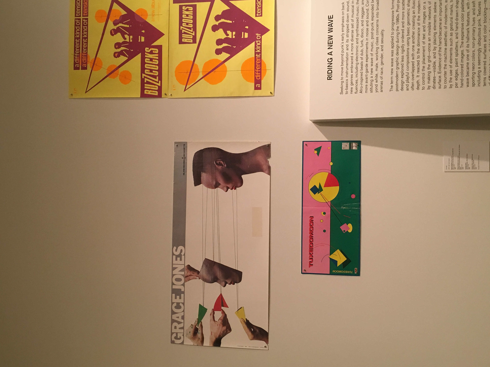
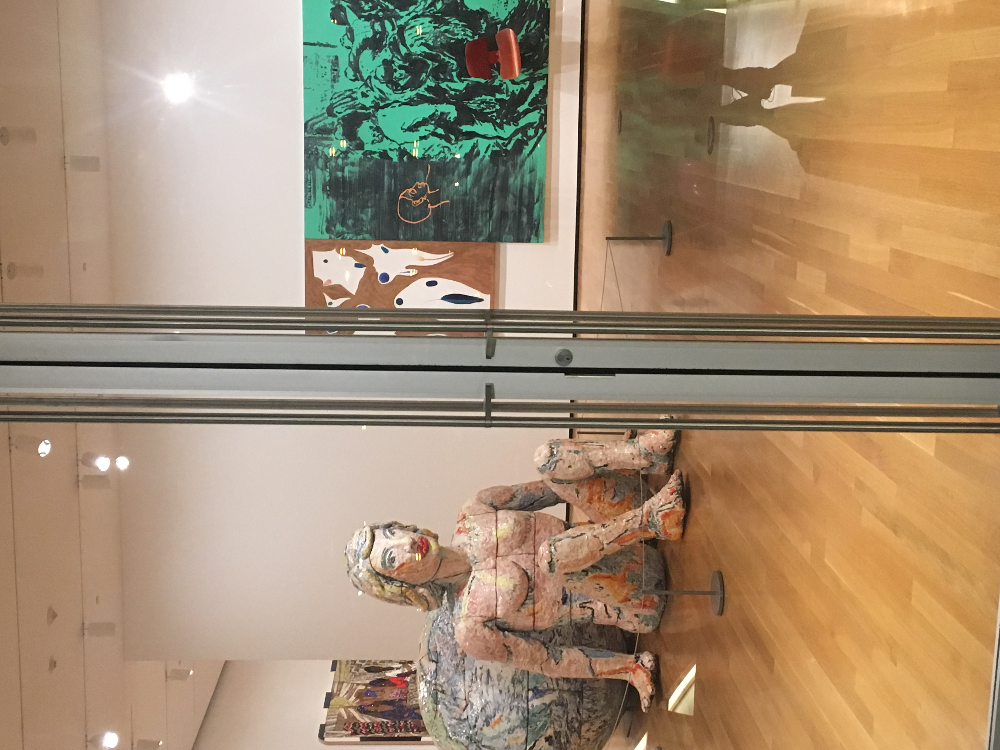
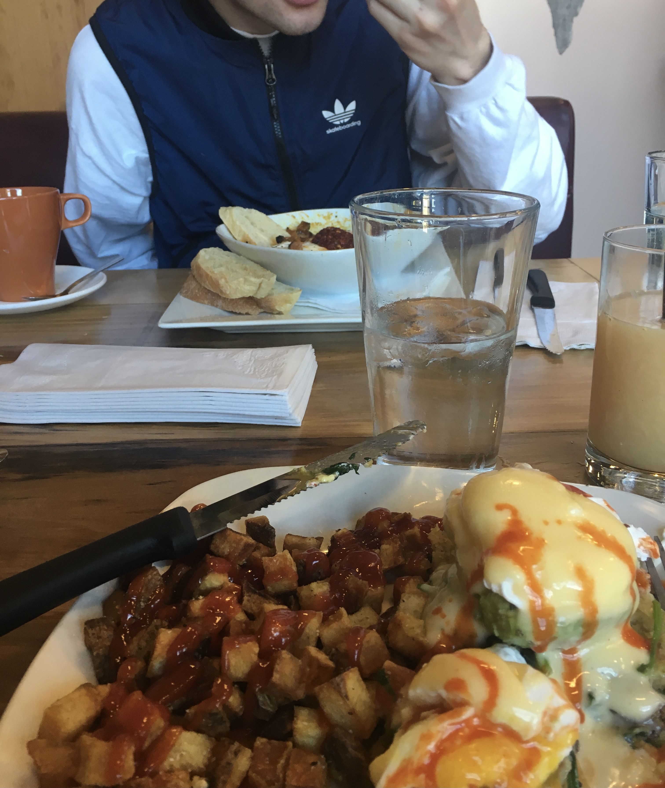
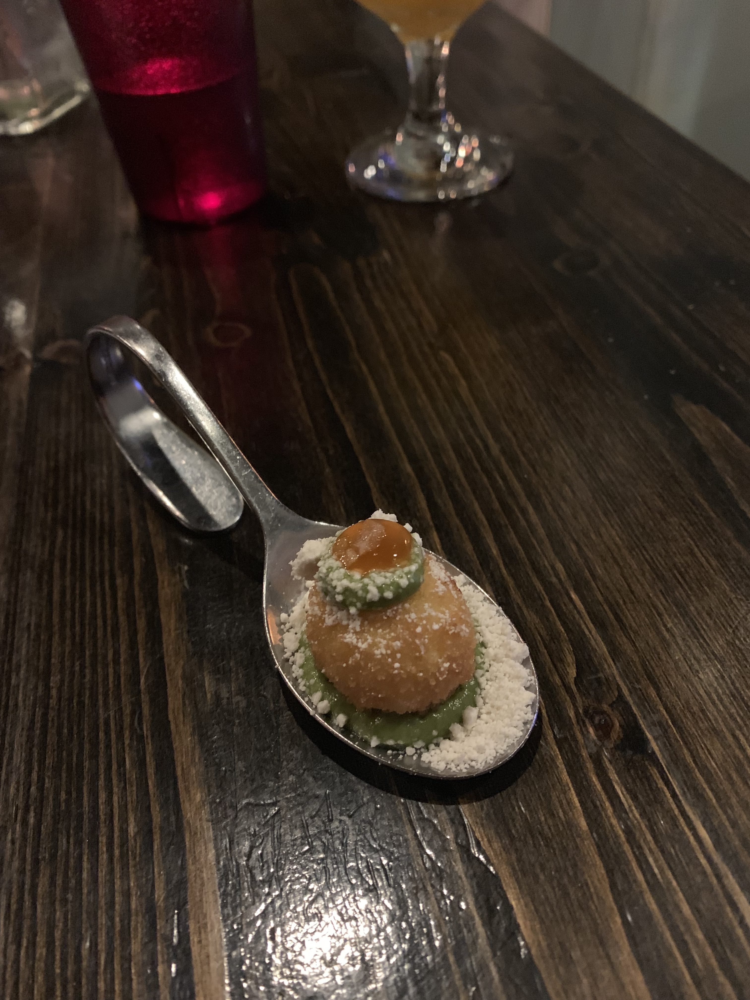
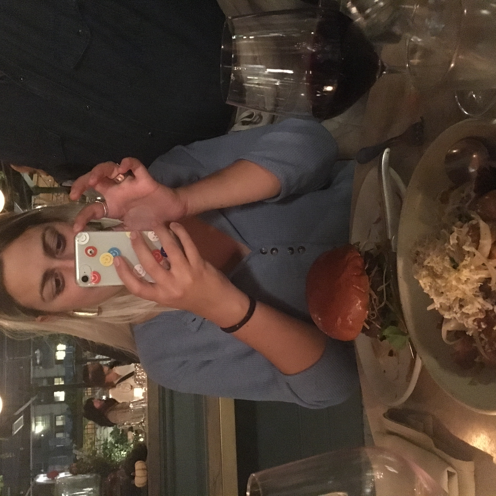

Traveling for Work
Fitting in Fun!
While traveling for work can be stressful, it still has its perks. Make sure when you are planning that you are also fitting in time for yourself to explore and more importantly to rest.
Below is a gallery of images from my days of work travel. Hopefully these will help give you some ideas!





